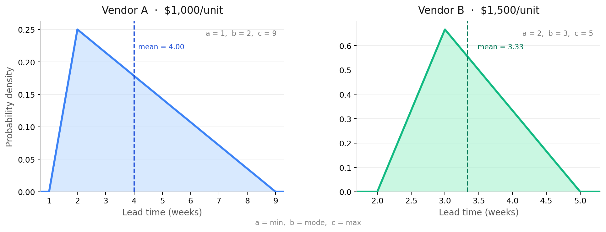
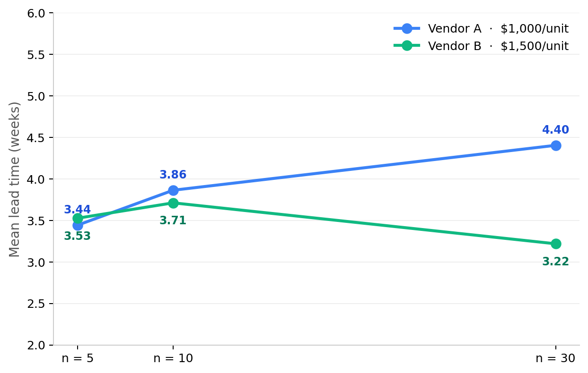
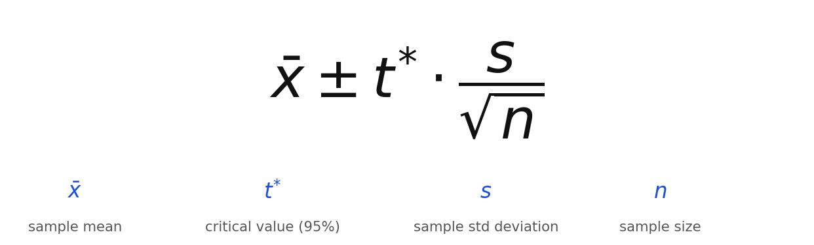
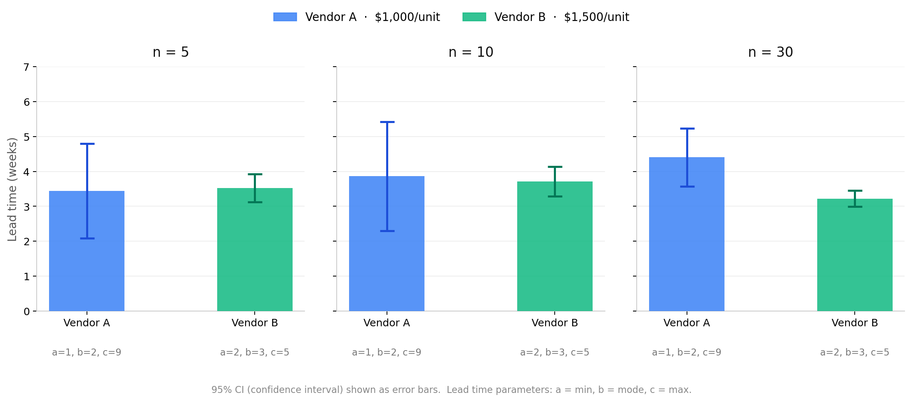

Life is Poker, Not Chess.
My favourite book on decision making is Thinking in Bets by Annie Duke. The simplest take away from the book, and one that I believe ruffles a lot of feathers, is: it is a fallacy to equate the quality of a decision with the quality of its outcome. Good decisions can have bad outcomes, and similarly bad decisions can occasionally give you a good outcome. Like she argues in the opening chapter ("Life is Poker, Not Chess"), when the Seattle Seahawks decided to throw the ball into the end zone instead of running it in 2015, and it cost them the SuperBowl, they were lambasted all over the sports media world the next morning. There were few that truly understood the decision. It turned out however that in the past 15 seasons, the interception rate at the one yard line was hovering around 2%.
That was the information the coach was working with. And if it were me, I'd probably take those odds too.
Every day the world collectively makes an uncountable number of decisions. From what everyone eats, to what they wear, to what suppliers are selected in a supply chain, to whether or not a new warehouse should be built and where. The stakes range from zero to infinity and the decisions you make everyday sit somewhere on that scale. As businesses replace tasks, whole processes, and even employees, with AI, I have to ask: are we leaving analysis on the table? Are we using the correct info before making our decision? While they do have massive amounts of historical data to pull from, these models are inherently stochastic. This means they have randomness baked into how they come up with an answer. When you prompt an AI, you are getting back just one of the potential answers to that prompt. Not the best one. Not the one best fit for your case. A point estimate. This is just a property of the model. It allows the model to explore very large solution spaces and come up with what seem like creative and engaging responses. But the workflows these models are supporting or even the centre of, do not treat randomness the way we should. And so, I believe we are falling short in the quality of our decisions, and depending on where the stakes of your decision making falls on that scale mentioned above, a more robust approach is required. And thankfully, a very good one has been around for decades.
Stochastic Nature of LLMs and Agents
Large Language Models (LLMs) like Llama2, Claude, ChatGPT, or CoPilot all share the same general architecture. They are what we call Transformer models. The development of the transformer is what accelerated the progress in LLMs and helped create the AI boom we're currently in. Without getting into too much detail, they convert text into a numerical representation called a "token". These tokens are sent through an enormous neural network and at the end of it we reach a probability distribution. This distribution is a function that essentially assigns a probability to the possible next tokens, which are then returned to the user. Think of its Y-axis as a range from 0,1 (0–100%) and the X-axis as a huge list of words. We can get a word from the X-axis through a number of sampling techniques. Two common types of sampling in LLMs are top-k and nucleus sampling, but simply put, they pick randomly from a subset of answers within the distribution. This is paired with a setting called the temperature. The temperature determines the shape of the probability distribution. The lower the temperature, the more high probability words are favoured. The higher the temperature, the distribution flattens out and more low-probability answers are considered. So, the models are random by nature in that they sample from a probability distribution, and that randomness can be scaled based on the temperature setting.
A Sampling Example (Vendor Selection)
In the case of the LLM, and in the case of most systems, we don't know what the underlying distribution looks like because we can't see the full population. We have to make estimates at what the distribution could be if we want to understand. Let's say for example in your supply chain that you are selecting between two vendors. This is a common strategic decision many organizations face and depending on the velocity of the industry, one that might be made several times a year and have significant effects on supply chain cost, stock out rates, and customer satisfaction. You hear about the lead times of both vendors from a colleague in the industry — there is no way for you to know about the population that that value is coming from, but you treat it as the average. You ask around some more and you're able to shape a range using some observed values from the industry.
The gut instinct may be to select Vendor A at the lower unit cost. And that certainly is a choice in the solution space. But let's look a little deeper at the lead time details.
Through some negotiation and discussion, you find out that Vendor A says best case scenario, they can offer 1 week lead times, most likely 2 weeks and at the worst case 9 weeks. If we average these parameters directly, we get their 4 week estimate. Vendor B says they range from 2, to 3, to 5 weeks. Taking the average of these bounds we get 3.33 weeks.
Now we have a real decision on our hands. Is the small difference in lead time worth the extra cost for Vendor B? At a $500 cost difference, we may stick with selecting Vendor A.
But the world is a random place. This evidence of 9 week lead times from Vendor A is a little scary. The vendors say the middle number is their "most likely" case — meaning the highest probability lead time we could get. Let's use these points and plot the vendor lead times as a triangular probability distribution. In low data contexts, this can be a useful tool for describing "best case, most likely case, and worst case". It is seen as a conservative estimate but can be smoothed with something like a PERT distribution. For the purposes of this exercise however, we get the below charts:

Now we see a lot about these two vendors that we couldn't see before. That long tail of Vendor A is quite visible when we plot their lead times like this. These probability distributions are just like the ones in our agentic workflows. They map the probability of any given result between a set of bounds or within a shape. These are much simpler than the ones in LLMs and yet we are already pretty far from just comparing simple averages. Let's take some samples from these distributions and create a sample population to compare the vendors. For this exercise, we're going to do something called inverse transform sampling, but in practice this is your LLM making a top-k sample, or in the supply chain example, you asking another customer of the vendor for their observed lead time.
If we take just one sample from an inverse transform sampling method, we may get something like:
5.415 weeks — Vendor A
3.149 weeks — Vendor B
Vendor B's number is kind of close to its assumed original average, but Vendor A's is quite far off. Let's sample different sized groups together, and take the average of those groups.

If we sample 5 times, then 10 times, and then finally 30 times, we see we get some pretty different results. In fact as we increase the size of the samples the averages of the two samples are getting further away from each other. But here's the problem — which one do we trust? Each run gives us a different number, and we have no way of knowing how close any of them are to the true average. A single mean, no matter how many times we calculate it, is still just a point estimate. To actually make a confident decision, we need to stop asking "what is the average?" and start asking "what range does the true average likely fall in?" That's exactly what a confidence interval gives us.
The Confidence Interval
The mean confidence interval is a statistical range estimated to contain the true mean of a population, based on sample data. Notice the specifics there. All we have in our example is sample data — even our first starting point of the average is a point estimate, a sample of 1. What the confidence interval does is allow us to estimate that unknown population. To get it, we use the following formula:

From our sampling exercise we have 3 samples for each vendor. Each one has a mean, each one has a size. With those two things we can get a sample standard deviation. And finally we include a t* critical value. This is a parameter that comes from the Student's t-distribution and is constant for a set degrees of freedom and level of confidence. We'll use a 95% level of confidence for this measurement. Coming back to the example, let's take each sample and calculate the confidence interval using the above formula. On the chart below we'll visualize this by overlaying an error bar (the confidence interval) on the solid coloured bar (the sample mean value):

So what do we see? Let's look at the first blue bar in the sample size of 5 panel. What we're seeing is that the sample average is about 3.5 but our estimate for the true population mean ranges from just over 2 to just under 5. That's a range almost as big as the sample mean itself! Hard to make a decision when we're talking about ranges that wide. Keep in mind too that Vendor B's sample average at this stage is very close to Vendor A's. This panel is like getting 5 testimonials or opinions about each vendor and making your decision from that. That may seem like a lot but the error bars suggest it's not enough info to confidently make the choice. In the 10 sized sample we see something similar. Jumping to the 30 sized sample is when we start to see a proper separation. We see that our estimate for the true mean population of Vendor A's lead times is around 4.4, not the original thought of 4. Vendor B is sitting at 3.22, pretty close to the original. Looking at the error bars, we see it has tightened for both, but is still large for Vendor A. It could go anywhere from ~3.7 to around ~5.2. For Vendor B, it is very tight, a gap of about ~0.25. What's important here is that the bars in our 30 replication example are non-overlapping. What that means is we are pretty confident that the true population means of the two vendors are not that close to each other, and that there is most likely a statistical difference between the two populations.
This is now a much more powerful analysis to support paying the additional unit costs for a more reliable supplier. Let's say a business rule of ours says we could not accept a mean lead time of 4.5 weeks. Our original point estimate for Vendor A would have slipped under that threshold easily. At 30 runs even, the sample average of 4.4 weeks would as well. But understanding our error bar, we're saying the true mean could go as high as 5.2! That's a lot of room still to go above our threshold. Meanwhile, with Vendor B, we are very confident that the true population mean is sitting well below our threshold — and thanks to this chart, may tip the scales in favour of Vendor B.
Conclusion
Stochastic models are great. They allow us to explore randomness, consider extreme edge cases, and prepare for the chaos of the real world. However, when we don't handle them appropriately, it can get us stuck making decisions off of point estimates. Simply put, increasing replications increases confidence. This can be done by collecting more data, using tools like simulation, or if you are committed to agentic workflows, working replications and confidence intervals into those workflows so that you are making the best decisions you can. When you add this layer, you can ensure you are exploring the solution space adequately. As this example showed, a little extra compute can help avoid a bad decision.
As someone who spends their career building and using stochastic models, this is all very normal to me. The world is a random place. To people outside my field, even those in computer science building and deploying LLM agents, it can be overlooked. Annie Duke sums it up perfectly in Thinking in Bets by telling us that there are only two things that determine outcomes: the quality of our decisions, and luck. In other words, she means randomness. This part is out of our control, and what is in our control is increasing the quality of our decisions. Trying our best, when the stakes call for it, to ensure we are exploring our options adequately. The rapid adoption of these models is going to have significant effects on how organizations make decisions. The least we can do is treat them as they are designed.